Overview
Available Version: The Task Scheduler feature is available as of ProcessMaker 3.5.0.
The Task Scheduler manages internal processes using the Laravel queue processing architecture, thereby processing jobs that bypass internal ProcessMaker functions. As of ProcessMaker 3.6.0, the Task Scheduler uses Laravel jobs methods. The Task Scheduler improves run-time efficiency, performance and handling errors. Use Task Scheduler to configure the time and periodicity to run the activities that previously cron jobs ran. Instead of cron jobs, the Task Scheduler works for the Task Manager using queue jobs.
The Task Manager runs with the Laravel queue jobs when:
- Unpausing cases
- Sending pending emails
- Activating pending plugins
- Calculating the elapsed time of all open tasks in active cases according to the configured calendar
- Running triggers for self service cases that have a configured timeout setting
- Running the
messageeventcron.phpscript that runs the send and receive message events and the email intermediate throwing and email end events - Running the
timereventcron.phpscript that runs the timer start and intermediate timer events - Running the
ldapcron.phpscript that runs the LDAP and Active Directory synchronization, which is an option available in Advanced LDAP/AD in the Enterprise Edition - Running the
sendnotificationscron.phpscript that sends notifications, including to ProcessMaker Mobile, when cases are created and when cases are routed to new tasks - Running the
actionsByEmailEmailResponse.phpscript that reads the Action by Email receiver account inbox looking for new messages - Calculating the app data of all cases in all processes
- Calculating the behavior of the users
All of them are described in the Cron Scripts page.
Requirements
Take into account the following requirements:
The Task Scheduler requires the PM_TASK_SCHEDULER_ADMIN permission. By default, the PM_TASK_SCHEDULER_ADMIN permission is enabled for the PROCESSMAKER_ADMIN role.
The Task Scheduler requires to run the Crontab. For this purpose, in the console, run the following line for each workspace after the Crontab running:
* * * * * cd /opt/processmaker && ./processmaker artisan schedule:run --workspace={workspace} --user={web-server}
Restrictions and Recommendations
Please take into consideration the following:
- Task Scheduler does not work with Internet Explorer 11. For further information about IE compatibility, please check this section.
- Recover process tasks from the
JOBS_FAILEDtable when the ProcessMaker system maintenance is not being used and before applying commands. Turn off the supervisor in order to not corrupt the information. - Recover failed Processes by running the command:
./processmaker artisan queue:retry {id} --workspace={workspace}where {id} can be obtained by running the command:./processmaker artisan queue:failed --workspace={workspace}. Otherwise, delete unrecoverable processes by running the command:./processmaker artisan queue:forget {id} --workspace={workspace}. Usually, Processes not recovered are those with code errors in the triggers or some exception.
Task Scheduler Information
Each task in the Task Scheduler has the following characteristics:

- Search query: Search for a specific task.
- Enable: Enable a task's toggle key to enable that task. Otherwise, the task is disabled.
- Service: View the task name to be scheduled.
- Schedule time: View the scheduled interval in which to run the task.
Note: If the task has the default settings, which use starting and ending times, you must set the server time zone to display it in the Schedule time column.
- Default Settings: When the Default Settings label displays, the Task Scheduler is using the base setting ProcessMaker recommends. Click the gear icon next to the Default Settings to customize the task configuration. Thereafter, the label changes to Custom Settings.
- Custom schedule settings: After clicking the gear icon to customize the task configuration, the Custom schedule settings window displays:
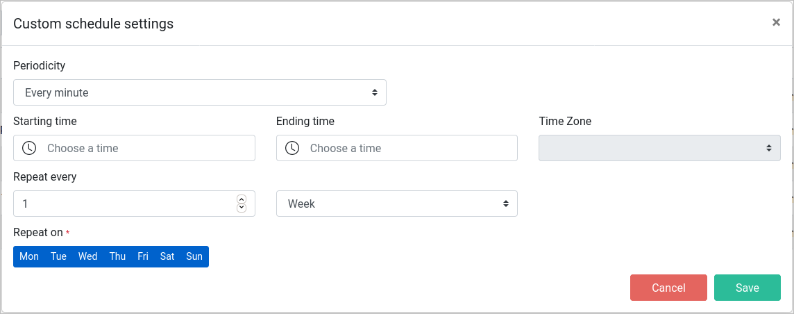
- Periodicity: Required Set the interval in minutes and hours with a recursive run-time of the job task. Choose among the following values: Every minute, Every five minutes, Every ten minutes, Every fifteen minutes, Every thirty minutes, Every hour, Once per day and Twice per day.
- Once per day and Twice per day:
Available Version: As of ProcessMaker 3.5.5, Task Scheduler may now be set to run once or twice each day at a specific time and time zone.
After selecting Once per day or Twice per day:- Accordingly, one or two time pickers enable next to the Periodicity field. Due to Laravel Job Scheduler conventions, you can set just hours, minutes is disabled.
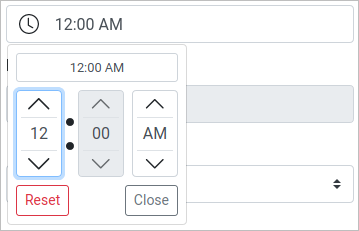
- The Starting time and Ending time fields clear and disable.
- The Time Zone field enables.
- Accordingly, one or two time pickers enable next to the Periodicity field. Due to Laravel Job Scheduler conventions, you can set just hours, minutes is disabled.
- Once per day and Twice per day:
- Starting time: Set a starting time to run a job task. The Time Zone setting enables with the client desktop's default time zone.
- Ending time: If the starting time is enabled, it allows you set an ending time to stop a job task.
- Time Zone: After setting the starting time, select a new time zone setting if necessary.
- Repeat every: Define the repetition in weeks, months, and years.
- Repeat on: Days that the job task running repeat. All days are selected by default. The values are: Mon, Tue, Wed, Thu, Fri, Sat and Sun.
- Cancel: Cancel the above settings.
- Save: Save custom changes.
- Periodicity: Required Set the interval in minutes and hours with a recursive run-time of the job task. Choose among the following values: Every minute, Every five minutes, Every ten minutes, Every fifteen minutes, Every thirty minutes, Every hour, Once per day and Twice per day.
Task Scheduler Modules
The Task Scheduler has the following modules:
Case Actions
Select which actions to trigger that intervene in cases, and at which interval.
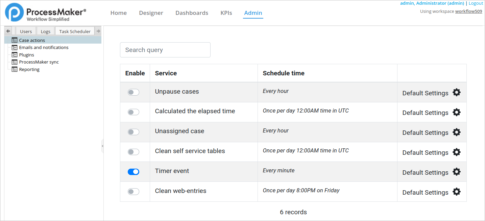
In the actions list, the Timer event is enabled by default. The actions are the following:
- Unpause cases: The default time is every hour. Hovering on the Service label, a tooltip displays Unpauses any case whose pause time has expired.
- Calculated the elapsed time: The default time is every hour in UTC. Hovering on the Service label, a tooltip displays Calculates the elapsed time according to the configured calendar of all open tasks in active cases.
- Unassigned case: The default time is every hour. Hovering on the Service label, a tooltip displays Run the trigger for self-service cases that have a configured timeout setting.
- Clean self service tables: The default time is every hour in UTC. Hovering on the Service label, a tooltip displays Clean unused records for Self-Service Value-Based feature. It is a maintenance command.
- Timer event: The default time is every minute. Hovering on the Service label, a tooltip displays Executes timer start and intermediate timer events. By default this task is enabled.
- Clean web-entries: It is available as of ProcessMaker 3.6.0. The default time is once per day at 8:00PM on Fridays. Hovering on the Clean web-entries label, a tooltip displays Clean web-entries. By default this task is disabled.
Emails and Notifications
Select which emails and case notifications ProcessMaker sends, and at which interval.
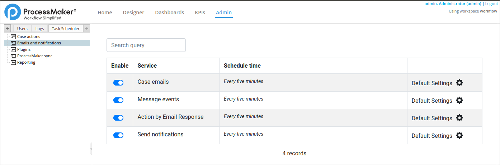
In the actions list, all of them are enabled by default. The actions are the following:
- Case emails: The default time is every five minutes. Hovering on the Service label, a tooltip displays Task, triggers, and actions by email notifications.
- Message events: The default time is every five minutes. Hovering on the Service label, a tooltip displays Intermediate and end email event.
- Action by Email Response: The default time is every five minutes. Hovering on the Service label, a tooltip displays Action by email response account email revision.
- Send notifications: The default time is every five minutes. Hovering on the Service label, a tooltip displays ProcessMaker mobile notifications.
Plugins
Available Version: It is not available in the ProcessMaker Community version.
Task Scheduler can run custom plugins that are embedded in the Task Manager plugin class. Custom plugins run collectively in Task Scheduler. All custom plugins may be enabled, disabled, or run at a specified interval through Task Scheduler.

All actions in the actions list are disabled by default. Enable the toggle key for the ProcessMaker plugin service action to enable all custom plugins embedded in the Task Manager plugin class, and then schedule the interval at which to run all custom plugins collectively.
ProcessMaker Sync
Available Version: It is not available in the ProcessMaker Community version.
Select when Task Scheduler synchronizes with your advanced LDAP to sync users in your organization with ProcessMaker.

All actions in the actions list are disabled by default. Enable the toggle key for the ProcessMaker LDAP cron action so Task Scheduler syncs with your advanced LDAP, and then schedule the interval at which Task Scheduler syncs.
Reporting
Available Version: It is not available in the ProcessMaker Community version.
Schedule at which interval to run KPI reports on ProcessMaker users and processes. Both KPI reports must be enabled, though each may be scheduled at different times and intervals.

All actions in the actions list are disabled by default. The actions are the following:
- KPI Report by user: The default time is every ten minutes. Hovering on the Service label, a tooltip displays Recalculate KPI's information by user.
- KPI Report by process: The default time is every ten minutes. Hovering on the Service label, a tooltip displays Recalculate main KPI board information.
Task Scheduler Logs
For ProcessMaker 3.5.x versions, ProcessMaker records Task Scheduler Logs according to the ProcessMaker Standard Logging that stores new settings as Information INFO.
As of ProcessMaker 3.6.0, the Task Scheduler for each workspace saves scheduled and finalized jobs in a dedicated file like taskScheduler-YYYY-MM-DD.log in the following folder /opt/{path_install}/processmaker/shared/sites/{WORKSPACE}/log/. The Task Scheduler file just saves information from the Task Scheduler Modules.
The log includes and ID and a tag to know if the task is scheduled or finished.
- Scheduled tasks:
<200> Nov 24 19:16:43 taskScheduler INFO: Start actionsByEmailResponse#5fbc706619ad0 {"ip":"172.16.3.44","timeZone":"2020-11-24 15:07:43","workspace":"pm32",...} - Finished tasks:
<200> Nov 24 19:16:43 taskScheduler INFO: Finish actionsByEmailResponse#5fbc706619ad0 {"ip":"172.16.3.44","timeZone":"2020-11-24 15:07:43","workspace":"pm32",...}
The following images display a log example of each module in the Task Scheduler:
- Case Actions
- Unpaused
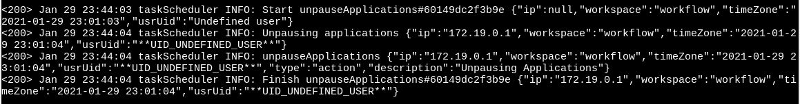
- Calculated the elapsed time
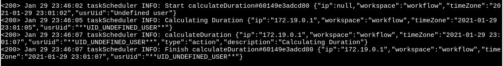
- Unassigned case
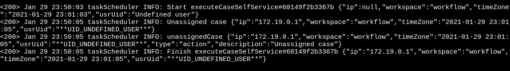
- Clean self service tables
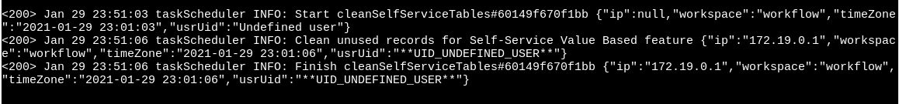
- Timer event
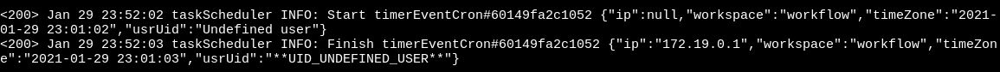
- Clean web-entries
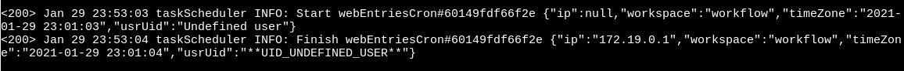
- Unpaused
- Emails and notifications
- Case emails
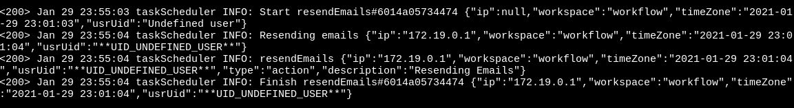
- Message events
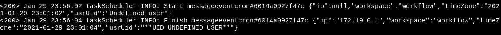
- Action by Email Response
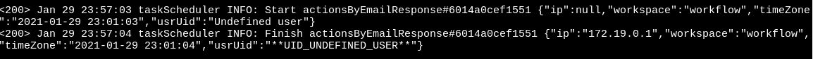
- Send notifications

- Case emails
- ProcessMaker plugins
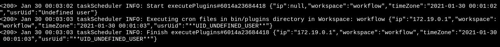
- ProcessMaker LDAP Sync

- Reporting
Note: The KPI Reporting logs work properly with the cronjob settings.
- KPI Report by user

- KPI Report by process
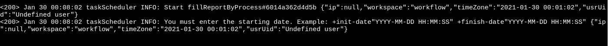
- KPI Report by user
Task Scheduler Error Logs
For the error logs, take into account the following:
- All errors are logged in the ProcessMaker Standard Logs describing all references for errors that occur based on the ProcessMaker logs format and include Laravel Queue format.
- All Actions by Email are logged in its log list.